vignettes/dreamlet.Rmd
dreamlet.RmdAs the scale of single cell/nucleus RNA-seq has increased, so has the complexity of study designs. Analysis of datasets with simple study designs can be performed using linear model as in the muscat package. Yet analysis of datsets with complex study designs such as repeated measures or many technical batches can benefit from linear mixed model analysis to model to correlation structure between samples. We previously developed dream to apply linear mixed models to bulk RNA-seq data using a limma-style workflow. Dreamlet extends the previous work of dream and muscat to apply linear mixed models to pseudobulk data. Dreamlet also supports linear models and facilitates application of 1) variancePartition to quantify the contribution of multiple variables to expression variation, and 2) zenith to perform gene set analysis on the differential expression signatures.
Here we perform analysis of PBMCs from 8 individuals stimulated with interferon-β Kang, et al, 2018, Nature Biotech. This is a small dataset that does not have repeated measures or high dimensional batch effects, so the sophisticated features of dreamlet are not strictly necessary. But this gives us a oppurtunity to walk through a standard dreamlet workflow.
Here, single cell RNA-seq data is downloaded from ExperimentHub.
library(dreamlet)
library(muscat)
library(ExperimentHub)
library(cowplot)
library(zenith)
library(scater)
library(kableExtra)
# Download data, specifying EH2259 for the Kang, et al study
eh <- ExperimentHub()
sce <- eh[["EH2259"]]
# only keep singlet cells with sufficient reads
sce <- sce[rowSums(counts(sce) > 0) > 0, ]
sce <- sce[,colData(sce)$multiplets == 'singlet']
# compute QC metrics
qc <- perCellQCMetrics(sce)
# remove cells with few or many detected genes
ol <- isOutlier(metric = qc$detected, nmads = 2, log = TRUE)
sce <- sce[, !ol]
# compute normalized data
sce <- sce[rowSums(counts(sce) > 1) >= 10, ]
sce <- computeLibraryFactors(sce)
sce <- logNormCounts(sce)
# set variable indicating stimulated (stim) or control (ctrl)
sce$StimStatus = sce$stimDreamlet, like muscat, performs analysis at the pseudobulk-level by summing reads across cells for a given sample and cell type. aggregateToPseudoBulk is substantially faster for large on-disk datasets than muscat::aggregateData.
# Since 'ind' is the individual and 'StimStatus' is the stimulus status,
# create unique identifier for each sample
sce$id <- paste0(sce$StimStatus, sce$ind)
# Create pseudobulk data by specifying cluster_id and sample_id
# Count data for each cell type is then stored in the `assay` field
# assay: entry in assayNames(sce) storing raw counts
# cluster_id: variable in colData(sce) indicating cell clusters
# sample_id: variable in colData(sce) indicating sample id for aggregating cells
pb <- aggregateToPseudoBulk(sce,
assay = "counts",
cluster_id = "cell",
sample_id = "id",
verbose = FALSE)
# one 'assay' per cell type
assayNames(pb)## [1] "B cells" "CD14+ Monocytes" "CD4 T cells"
## [4] "CD8 T cells" "Dendritic cells" "FCGR3A+ Monocytes"
## [7] "Megakaryocytes" "NK cells"Apply voom-style normalization for pseudobulk counts within each cell cluster using voomWithDreamWeights to handle random effects (if specified).
# Normalize and apply voom/voomWithDreamWeights
res.proc = processAssays( pb, ~ StimStatus, min.count=5)
# the resulting object of class dreamletProcessedData stores
# normalized data and other information
res.proc## class: dreamletProcessedData
## assays(8): B cells CD14+ Monocytes ... Megakaryocytes NK cells
## colData(4): ind stim multiplets StimStatus
## metadata(0):
## Samples:
## min: 5
## max: 16
## Genes:
## min: 180
## max: 4455
## details(3): assay n_retained formulaprocessAssays() retains samples with at least min.cells in a given cell type. While dropping a few samples usually is not a problem, in some cases dropping sames can mean that a variable included in the regression formula no longer has any variation. For example, dropping all stimulated samples from analysis of a given cell type would be mean the variable StimStatus has no variation and is perfectly colinear with the intercept term. This colinearity issue is detected internally and variables with these problem are dropped from the regression formula for that particular cell type. The number of samples retained and the resulting formula used in each cell type can be accessed as follows. In this analysis, samples are dropped from 3 cell types but the original formula remains valid in each case.
# view details of dropping samples
details(res.proc)## DataFrame with 8 rows and 3 columns
## assay n_retained formula
## <character> <integer> <character>
## 1 B cells 16 ~StimStatus
## 2 CD14+ Monocytes 16 ~StimStatus
## 3 CD4 T cells 16 ~StimStatus
## 4 CD8 T cells 16 ~StimStatus
## 5 Dendritic cells 5 ~StimStatus
## 6 FCGR3A+ Monocytes 16 ~StimStatus
## 7 Megakaryocytes 9 ~StimStatus
## 8 NK cells 16 ~StimStatusHere the mean-variance trend from voom is shown for each cell type. Cell types with sufficient number of cells and reads show a clear mean-variance trend. While in rare cell types like megakaryocytes, fewer genes have sufficient reads and the trend is less apparent.
# show voom plot for each cell clusters
plotVoom( res.proc)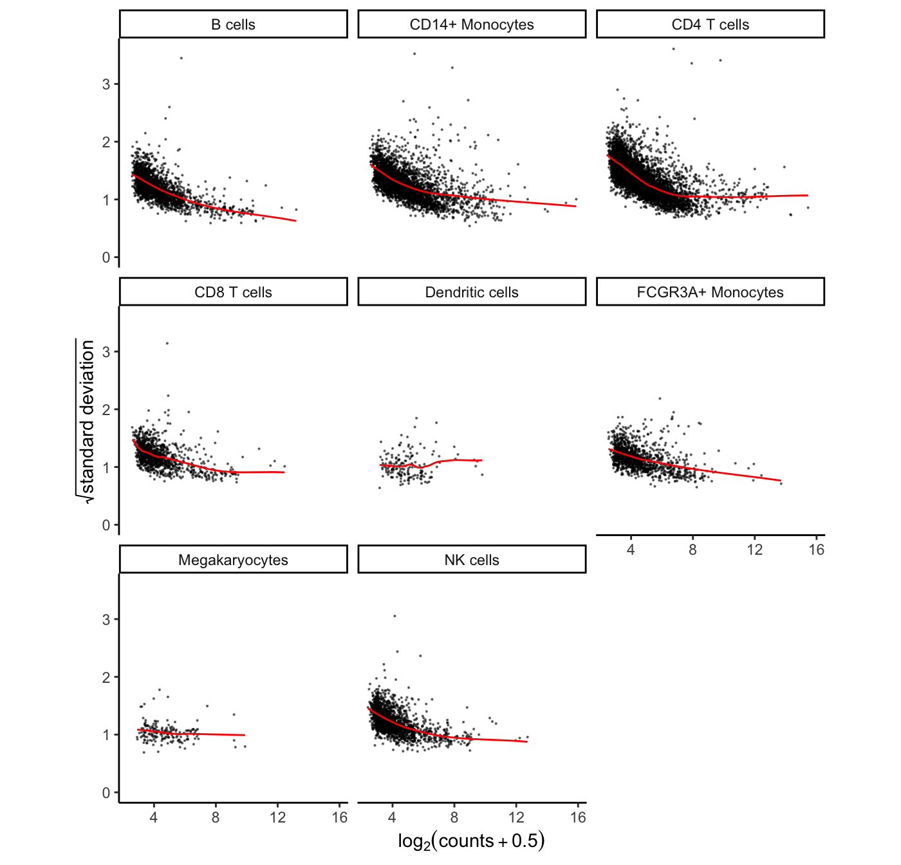
# Show plots for subset of cell clusters
# plotVoom( res.proc[1:3] )
# Show plots for one cell cluster
# plotVoom( res.proc[["B cells"]])The variancePartition package uses linear and linear mixed models to quanify the contribution of multiple sources of expression variation at the gene-level. For each gene it fits a linear (mixed) model and evalutes the fraction of expression variation explained by each variable.
Variance fractions can be visualized at the gene-level for each cell type using a bar plot, or genome-wide using a violin plot.
# run variance partitioning analysis
vp.lst = fitVarPart( res.proc, ~ StimStatus)
# Show variance fractions at the gene-level for each cell type
genes = vp.lst$gene[2:4]
plotPercentBars(vp.lst[vp.lst$gene %in% genes,])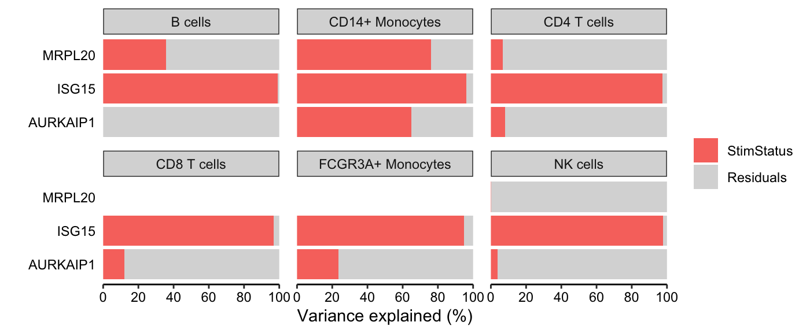
# Summarize variance fractions genome-wide for each cell type
plotVarPart(vp.lst, label.angle=60)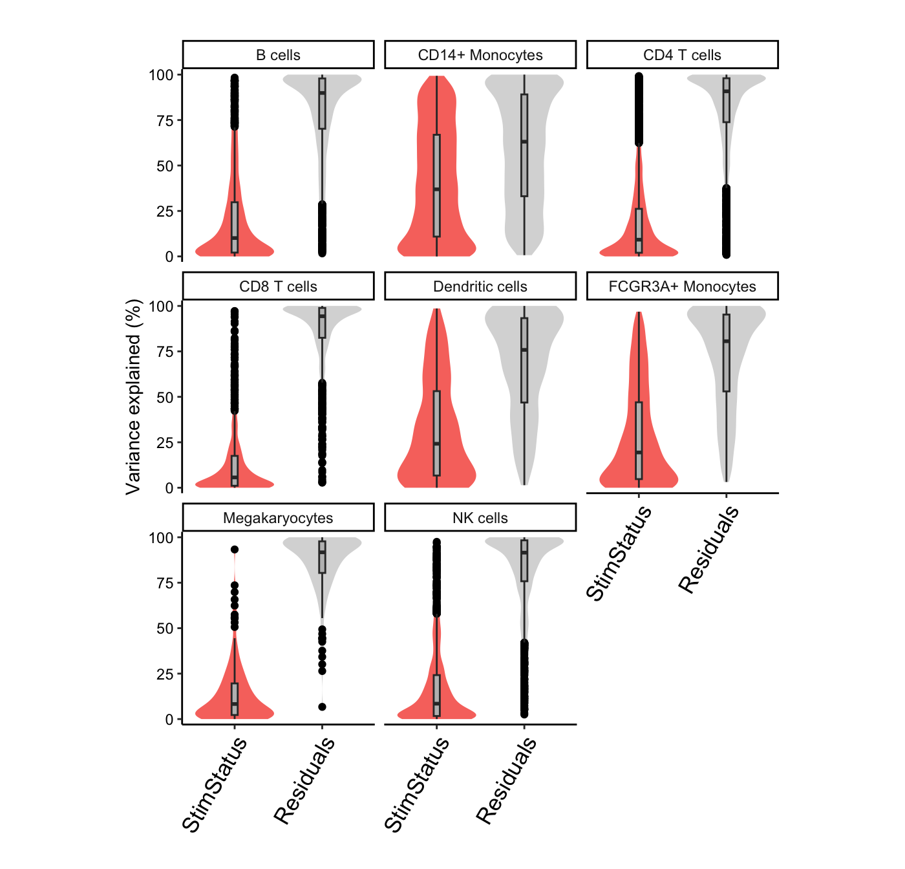
Since the normalized expression data and metadata are stored within res.proc, only the regression formula remains to be specified. Here we only included the stimulus status, but analyses of larger datasets can include covariates and random effects. With formula ~ StimStatus, an intercept is fit and coefficient StimStatusstim log fold change between simulated and controls.
# Differential expression analysis within each assay,
# evaluated on the voom normalized data
res.dl = dreamlet( res.proc, ~ StimStatus)
# names of estimated coefficients
coefNames(res.dl) ## [1] "(Intercept)" "StimStatusstim"
# the resulting object of class dreamletResult
# stores results and other information
res.dl## class: dreamletResult
## assays(8): B cells CD14+ Monocytes ... Megakaryocytes NK cells
## Genes:
## min: 180
## max: 4455
## details(4): assay n_retain formula formDropsTerms
## coefNames(2): (Intercept) StimStatusstimThe volcano plot can indicate the strength of the differential expression signal with each cell type. Red points indicate FDR < 0.05.
plotVolcano( res.dl, coef = 'StimStatusstim' )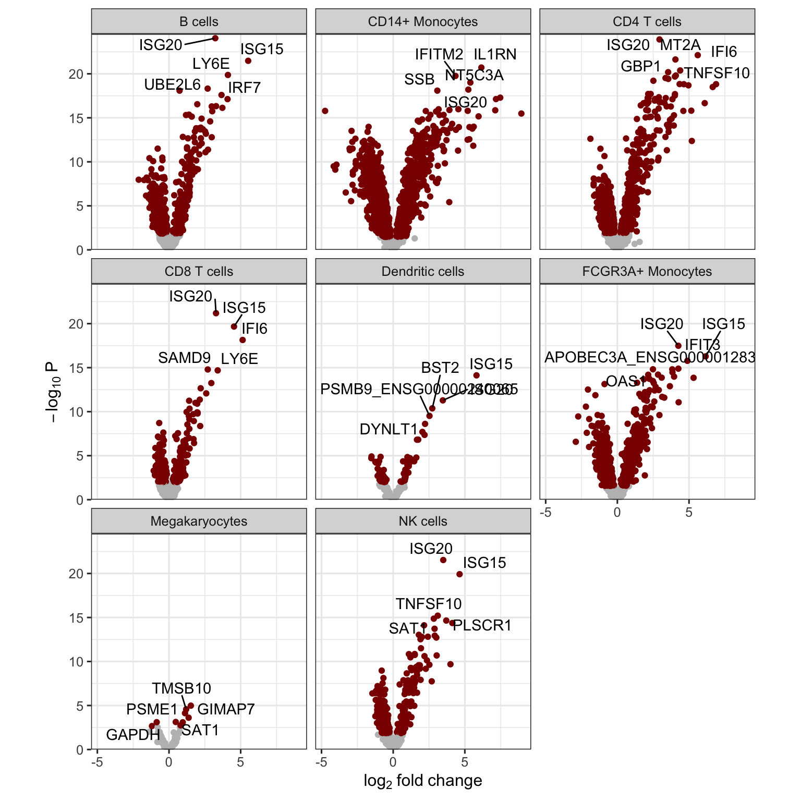
Each entry in res.dl stores a model fit by dream(), and results can be extracted using topTable() as in limma by specifying the coefficient of interest. The results shows the gene name, log fold change, average expression, t-statistic, p-value, FDR (i.e. adj.P.Val).
topTable(res.dl[["B cells"]], coef = 'StimStatusstim' )## logFC AveExpr t P.Value adj.P.Val B
## ISG15 5.526203 10.240731 29.94809 3.942031e-21 5.704118e-18 38.37168
## ISG20 3.317362 11.421612 28.30217 1.561277e-20 1.129584e-17 37.05904
## LY6E 4.290878 8.744657 21.01998 2.000133e-17 7.584859e-15 29.93200
## UBE2L6 2.719712 9.279037 20.81040 2.537188e-17 7.584859e-15 29.69832
## IRF7 3.726571 8.716599 20.78195 2.620891e-17 7.584859e-15 29.66924
## EPSTI1 3.696210 8.145939 20.57331 3.329155e-17 8.028813e-15 29.41155
## PLSCR1 4.066102 8.309200 19.70214 9.257824e-17 1.913724e-14 28.40669
## DYNLT1 3.101261 7.912137 18.12641 6.543225e-16 1.080168e-13 26.47151
## IFITM2 2.963947 8.769575 18.10590 6.718392e-16 1.080168e-13 26.43400
## SAT1 2.173411 9.695187 17.40672 1.679515e-15 2.430258e-13 25.43741A forest plot shows the log fold change and standard error of a given gene across all cell types. The color indicates the FDR.
plotForest( res.dl, coef = 'StimStatusstim', gene = 'ISG20')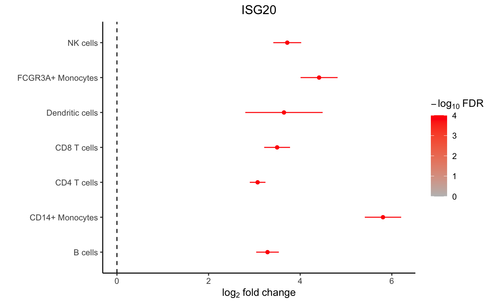
A hypothesis test of the difference between two or more coefficients can be performed using contrasts. The contrast matrix is evaluated for each cell type in the backend, so only the contrast string must be supplied to dreamlet().
# create a contrasts called 'Diff' that is the difference between expression
# in the stimulated and controls.
# More than one can be specified
contrasts = c(Diff = 'StimStatusstim - StimStatusctrl')
# Evalaute the regression model without an intercept term.
# Instead estimate the mean expression in stimulated, controls and then
# set Diff to the difference between the two
res.dl2 = dreamlet( res.proc, ~ 0 + StimStatus, contrasts=contrasts)
# see estimated coefficients
coefNames(res.dl2)## [1] "Diff" "StimStatusctrl" "StimStatusstim"
# Volcano plot of Diff
plotVolcano( res.dl2[1:2], coef = 'Diff' )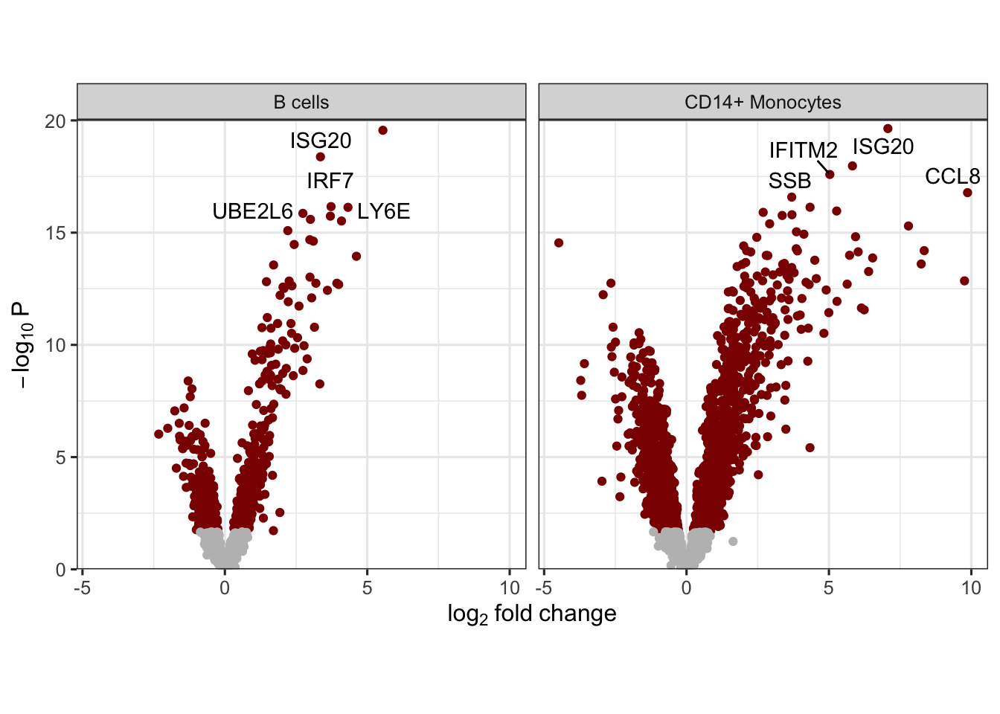
This new Diff variable can then be used downstream for analysis asking for a coefficient. But note that since there is no intercept term in this model, the meaning of StimStatusstim changes here. When the formula is 0 + StimStatus then StimStatusstim is the mean expression in stimulated samples.
For further information about using contrasts see makeContrastsDream() and vignette.
While standard enrichment methods like Fishers exact test, requires specifying a FDR cutoff to identify differentially expressed genes. However, dichotomizing differential expression results is often too simple and ignores the quantitative variation captured by the differential expression test statistics. Here we use zenith, a wrapper for limma::camera, to perform gene set analysis using the full spectrum of differential expression test statistics. zenith/camera is a competetive test that compares the mean test statistic for genes in a given gene set, to genes not in that set while accounting for correlation between genes.
Here, zenith_gsa takes a dreamletResult object, the coefficient of interest, and gene sets as a GeneSetCollection object from GSEABase.
# Load Gene Ontology database
# use gene 'SYMBOL', or 'ENSEMBL' id
# use get_MSigDB() to load MSigDB
go.gs = get_GeneOntology(to="SYMBOL")
# Run zenith gene set analysis on result of dreamlet
res_zenith = zenith_gsa(res.dl, coef = 'StimStatusstim', go.gs)
# examine results for each ell type and gene set
head(res_zenith)## assay coef Geneset
## 1 B cells StimStatusstim GO0034340: response to type I interferon
## 2 B cells StimStatusstim GO0060337: type I interferon signaling pathway
## 3 B cells StimStatusstim GO0071357: cellular response to type I interferon
## 4 B cells StimStatusstim GO0048525: negative regulation of viral process
## 5 B cells StimStatusstim GO0051607: defense response to virus
## 6 B cells StimStatusstim GO0060333: interferon-gamma-mediated signaling pathway
## NGenes Correlation delta se p.less p.greater PValue
## 1 17 0.01 4.586323 0.6352284 0.9999978 2.212697e-06 4.425394e-06
## 2 17 0.01 4.586323 0.6352284 0.9999978 2.212697e-06 4.425394e-06
## 3 17 0.01 4.586323 0.6352284 0.9999978 2.212697e-06 4.425394e-06
## 4 13 0.01 4.747930 0.7156646 0.9999944 5.622816e-06 1.124563e-05
## 5 24 0.01 3.479750 0.5536610 0.9999900 1.002634e-05 2.005268e-05
## 6 19 0.01 3.333906 0.6115057 0.9999574 4.263035e-05 8.526071e-05
## Direction FDR
## 1 Up 0.002898844
## 2 Up 0.002898844
## 3 Up 0.002898844
## 4 Up 0.004890780
## 5 Up 0.007662352
## 6 Up 0.020576251
# for each cell type select 5 genesets with largest t-statistic
# and 1 geneset with the lowest
# Grey boxes indicate the gene set could not be evaluted because
# to few genes were represented
plotZenithResults(res_zenith, 5, 1)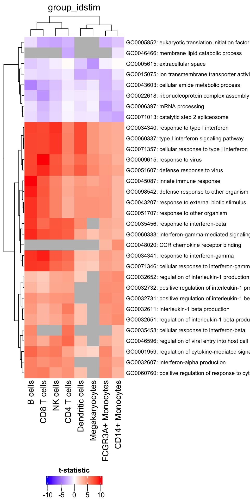
Here, show all genes with FDR < 5% in any cell type
# get genesets with FDR < 5%
gs = unique(res_zenith$Geneset[res_zenith$FDR < 0.05])
# keep only results of these genesets
df = res_zenith[res_zenith$Geneset %in% gs,]
# plot results, but with no limit based on the highest/lowest t-statistic
plotZenithResults(df, Inf, Inf)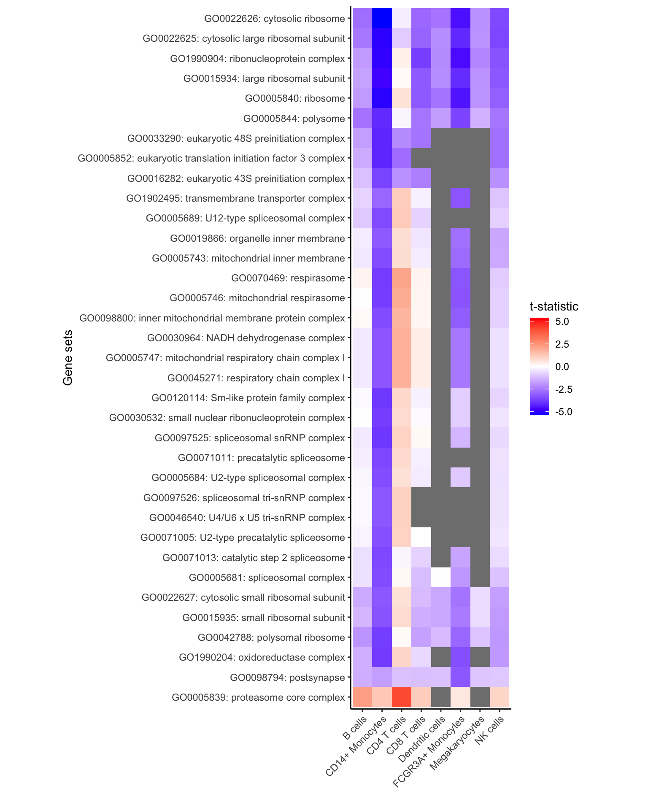
Identifying genes that are differentially expressed between cell clusters incorporates a paired analysis design, since each individual is observed for each cell cluster.
# test differential expression between B cells and the rest of the cell clusters
ct.pairs = c("B cells", "rest")
fit = dreamletCompareClusters( pb, ct.pairs, method="fixed")
# The coefficient 'compare' is the value logFC between test and baseline:
# compare = cellClustertest - cellClusterbaseline
df_Bcell = topTable(fit, coef="compare")
head(df_Bcell)## logFC AveExpr t P.Value adj.P.Val B
## C15orf48 -6.635081 8.200179 -52.73567 7.166069e-26 1.949171e-22 48.48023
## TIMP1 -6.664147 9.326366 -48.94376 4.060244e-25 5.521932e-22 47.17369
## ANXA1 -5.596470 8.477805 -36.83076 2.936001e-22 2.661975e-19 40.90691
## CCL2 -6.532150 8.564950 -36.29678 4.111548e-22 2.795853e-19 40.60157
## FTL -3.434776 13.363302 -33.18651 3.232134e-21 1.758281e-18 38.66849
## S100A10 -4.040431 8.873840 -27.35835 2.680319e-19 1.215078e-16 34.29294Evaluate the specificity of each gene for each cluster:
df_cts = cellTypeSpecificity( pb )
# Violin plot of specificity score for each cell type
plotViolin(df_cts)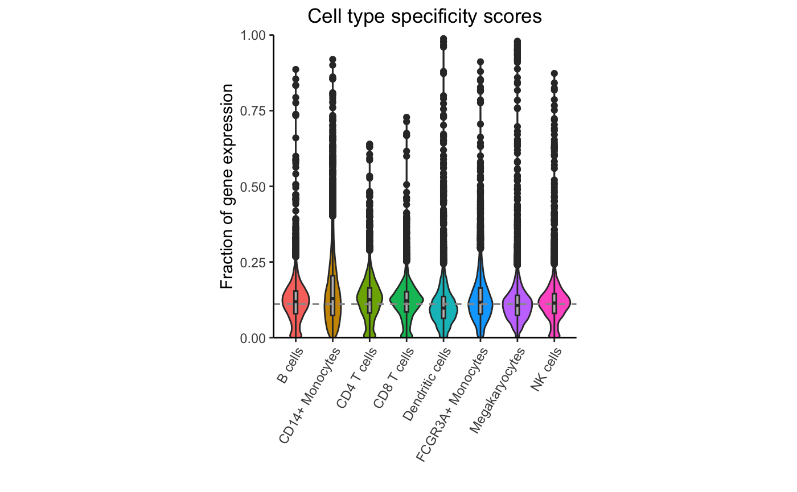
Highlight expression fraction for most specific gene from each cell type:
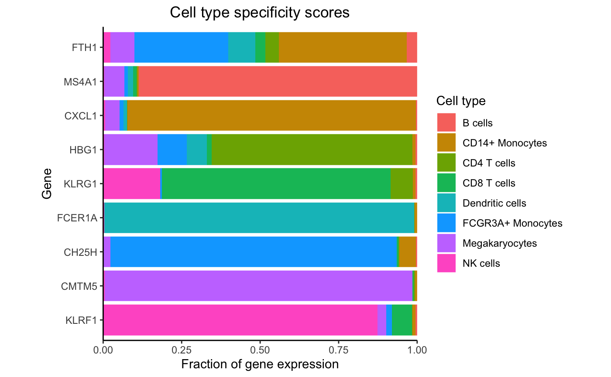
dreamlet::plotHeatmap( df_cts, genes = genes)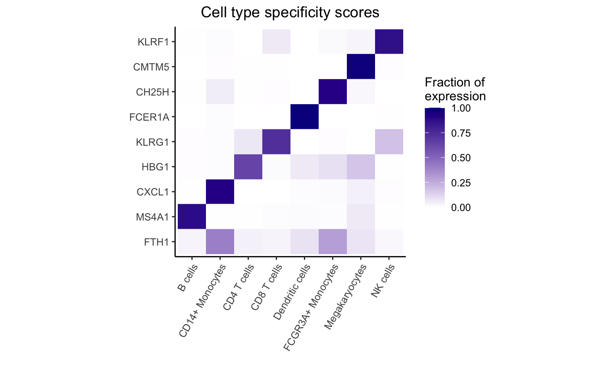